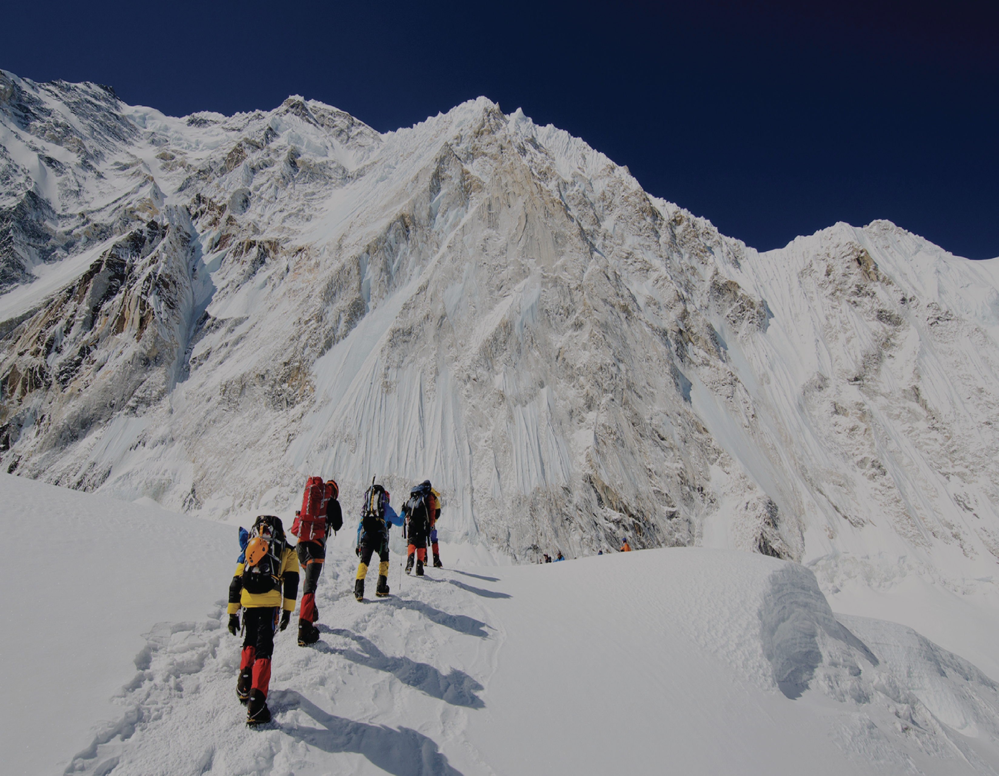

JUNKO TABEI: FIRST WOMAN TO CLIMB MOUNT EVEREST DIES AGED 77
By ABC NEWS
October 23, 2016 4:50 PM
The first woman to climb Mount Everest, Junko Tabei, has died aged 77.The Japanese climber had been diagnosed with cancer and died at a hospital outside of Tokyo.
Tabei reached the summit of the world's highest mountain in 1975, at the age of 35.
In 1992, she also became the first woman to complete the Seven Summits, reaching the highest peaks of the seven continents.
Tabei climbed her first mountain in 1939, when she was led by her elementary school teacher to the summit of Mt Nasu, her official website states.
She later established the Ladies Climbing Club: Japan, with the slogan "Let's go on an overseas expedition by ourselves".
Back in 1970s Japan, it was still widely considered that men were the ones to work outside and women would stay at home," Tabei told the Japan Times in 2012.
"Even women who had jobs — they were asked just to serve tea."
When she left on her Everest expedition, as part of a 15-member, all-women team, "we were told we should be raising children instead", she told the newspaper.
"There was never a question in my mind that I wanted to climb that mountain, no matter what other people said."
She had continued climbing later in life, and her website said she went abroad "seven to eight times a year to climb the highest mountain of each country".
As of 2008, Tabei had climbed the highest peaks of 56 countries, it stated.
Tabei was married with two children.
She completed a degree in English and American Literature at Showa Women's University in 1962, and a master's degree in comparative social culture, focusing on garbage problems in the Himalayas, at Kyusha University in 2000.
She campaigned for sustainable mountaineering and was chairperson of the Himalayan Adventure Trust of Japan, which is dedicated to the protection of mountain environments.